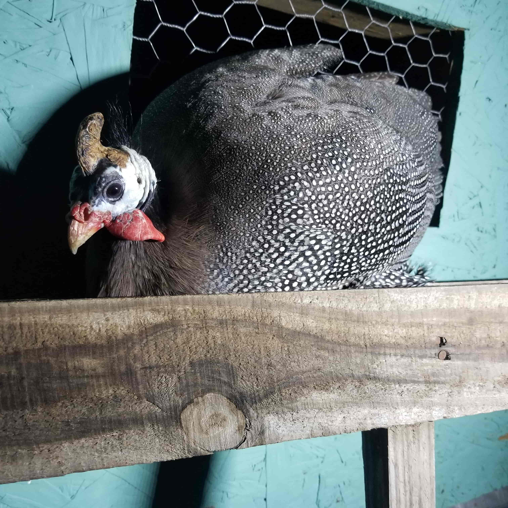

- Matt Geckley
- Home
- Experience
- About
D.I.Y.

I love working with my hands. Fixing cars, simple carpentry, getting my hands dirty in the garden, home improvements, or improvising solutions to repair household appliances - all of these are challenges I enjoy taking on.
There's just something about using tools and materials to accomplish goals that excites me. Sometimes it feels like my hands think better than my head does. Fixing things feels like having magic powers. I'm not sure exactly how I got this way, but now it's in my blood and I can't let it go.
Animals
My house has no small amount of pets: two dogs and six cats. It's a lot of work cleaning up after all these fur babies but they're worth it. Even if they drive us crazy in the winter we still love them!
We also have a fair amount of animals outside. The photo above is a picture of Gus, the guard guinea. He just showed up at our fence line one day and decided he wanted to live with our chickens. Depending on the time of year we might have as many as 50 chickens. Some of those chickens we keep year-round to lay eggs. The bulk of that number are broiler chickens (the kind you raise for meat).